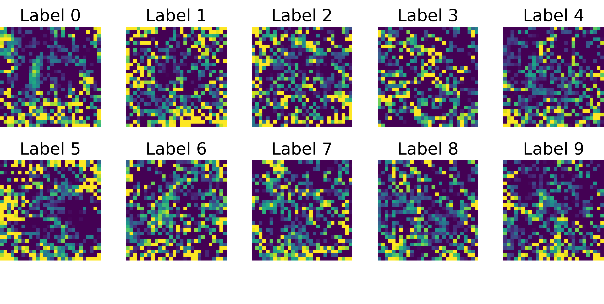
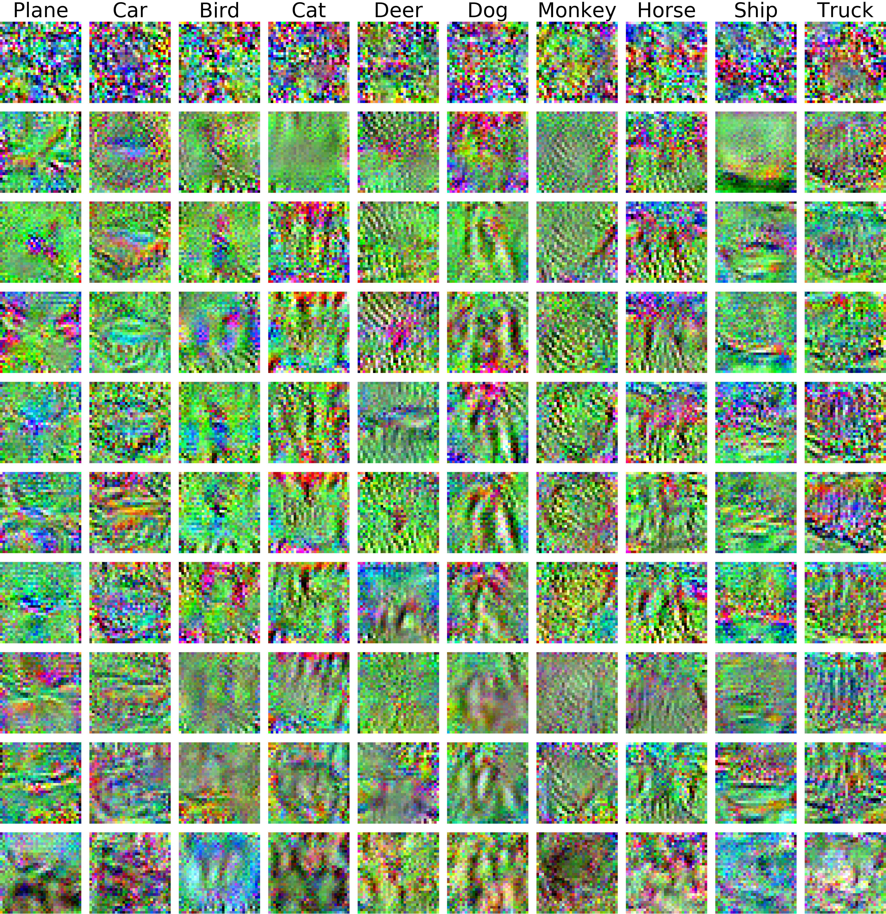
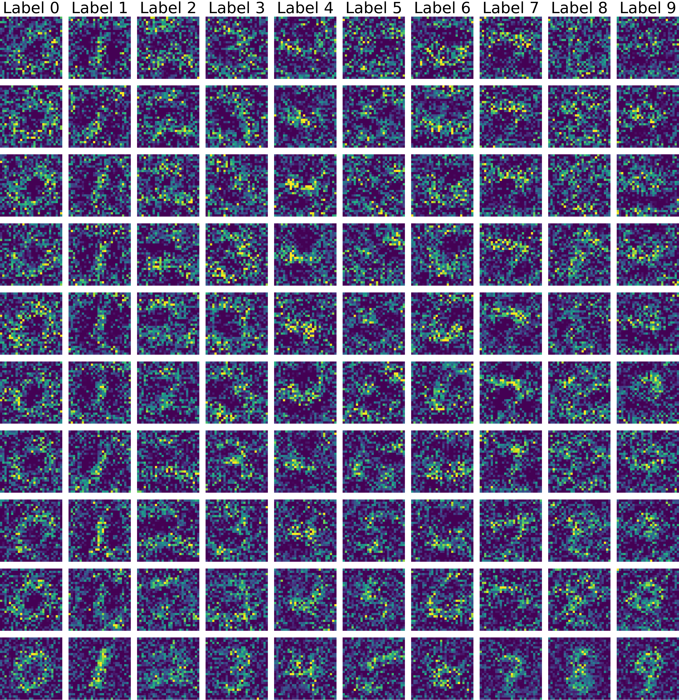
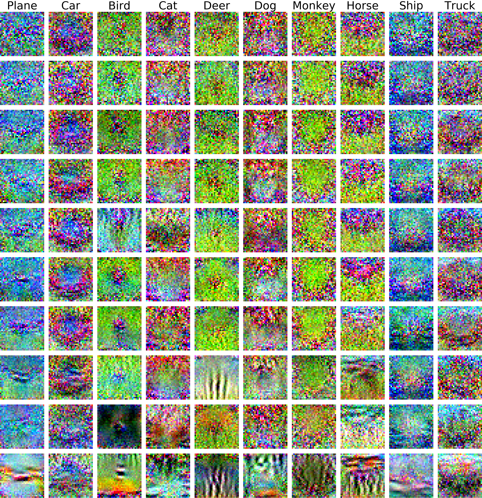
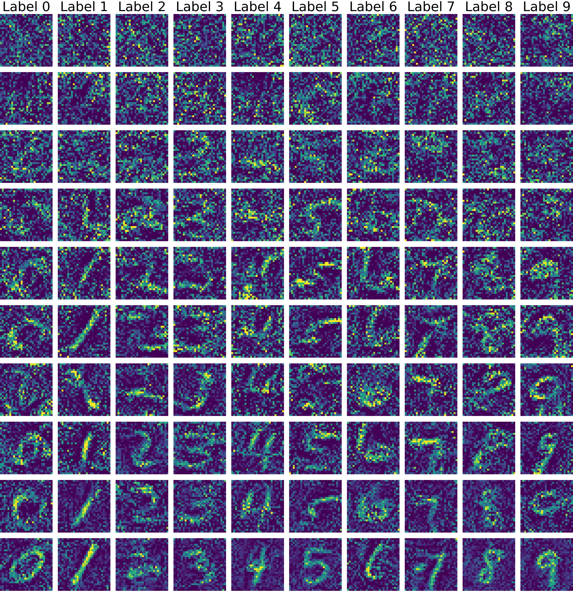
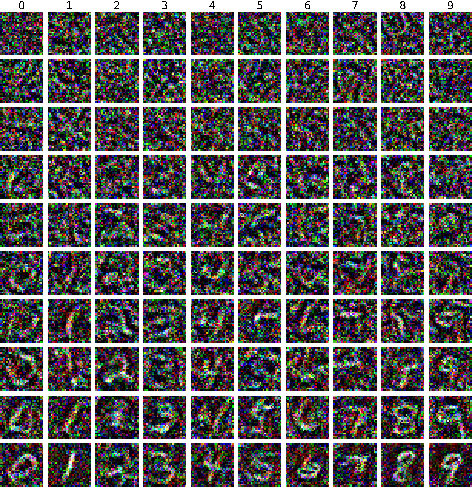
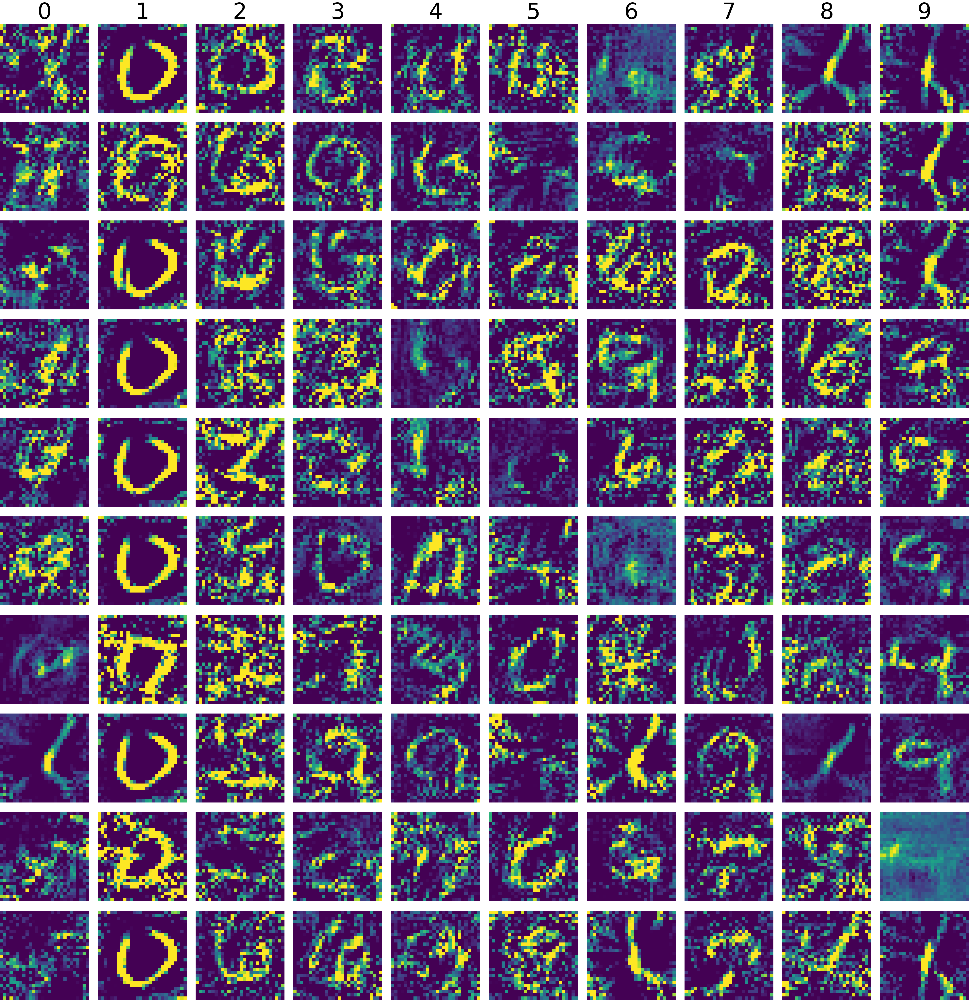
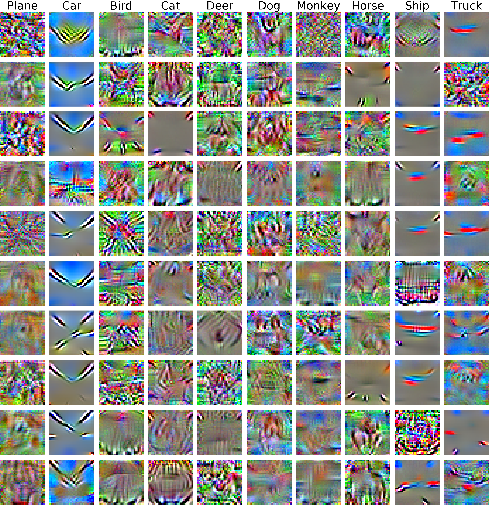

Dataset Distillation
Tongzhou Wang12 Jun-Yan Zhu2 Antonio Torralba2 Alexei A. Efros3
1Facebook AI Research 2MIT CSAIL 3UC Berkeley
Paper | PyTorch code
Abstract
Model distillation aims to distill the knowledge of a complex model into a simpler one. In this paper, we consider an alternative formulation called dataset distillation: we keep the model fixed and instead attempt to distill the knowledge from a large training dataset into a small one. The idea is to synthesize a small number of data points that do not need to come from the correct data distribution, but will, when given to the learning algorithm as training data, approximate the model trained on the original data. For example, we show that it is possible to compress 60,000 MNIST training images into just 10 synthetic distilled images (one per class) and achieve close to original performance with only a few steps of gradient descent, given a particular fixed network initialization. We evaluate our method in a wide range of initialization settings and with different learning objectives. Experiments on multiple datasets show the advantage of our approach compared to alternative methods in most settings.
Paper
arxiv 1811.10959, 2018.
Citation
Tongzhou Wang, Jun-Yan Zhu, Antonio Torralba, and Alexei A. Efros. "Dataset Distillation", arXiv preprint, 2018. Bibtex
Code: GitHub
Experiment Results
Standard devaiations mentioned below are calculated on 200 held-out models.
Train networks with a fixed known initialization
MNIST10 images train test accuracy from 12.9% to 93.8% |
CIFAR10100 images train test accuracy from 8.8% to 54.0% |
|  |  |
Train networks with unknown random initializations
MNIST100 images train test accuracy to 79.5% ± 8.1% |
CIFAR10100 images train test accuracy to 36.8% ± 1.2% |
|  |  |
Adapt pre-trained networks with unknown weights to a new dataset
USPS ⟶ MNIST100 images train test accuracy |
SVHN ⟶ MNIST100 images train test accuracy |
|  |  |
Attack well-trained classifiers with unknown weights within 1 gradient step
MNIST: 0 ⟶ 1100 images train classifiers with 98.6% ± 0.5% test accuracy |
CIFAR10: plane ⟶ car100 images train classifiers with 78.2% ± 1.1% test accuracy |
|  |  |
See our paper for more experiments, including adapting an AlexNet (pre-trained on ImageNet) to PASCAL-POC and CUB-200 with only one image per class.
Related Work
Acknowledgement
This work was supported in part by NSF 1524817 on Advancing Visual Recognition with Feature Visualizations, NSF IIS-1633310, and Berkeley Deep Drive.

{kind=link}
{kind=link}
{kind=link}
{kind=link}
{kind=link}
{kind=link}
{kind=link}
{kind=link}